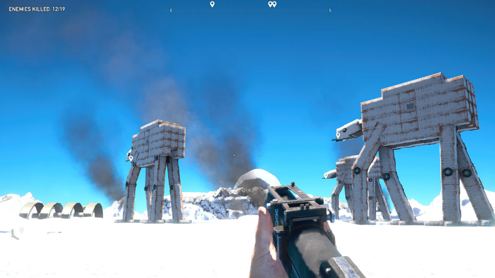

A Far Cry 5 Arcade módja egy izgalmas és sokoldalú funkció a játékban, amely lehetővé teszi a játékosoknak, hogy
saját pályákat tervezzenek és játszanak mások által készített tartalmakkal. Ez egyfajta virtuális játékteret nyújt,
ahol a kreativitás és a felfedezés határtalan. A játékosok építhetnek és testreszabhatnak saját pályákat, és
megoszthatják azokat másokkal, vagy éppen mások által készített pályákat fedezhetnek fel és játszhatnak velük.
Ezáltal a Far Cry 5 Arcade módja folyamatosan friss tartalommal szolgál, ami hozzájárul a játék újra- és
újraélhetőségéhez, valamint a közösségépítéshez a játékosok között. A móka és a kihívások várnak mindenki, aki
kíváncsi a Far Cry 5 Arcade módjára!

Elérés: Az Arcade módhoz eljuthatsz a főmenüből vagy a játék világából, amikor azokhoz az Arcade
terminálokhoz
érsz, amelyek elérhetőek a Hope County területén.
Válaszd ki a játékot: Miután beléptél az Arcade módba, válaszd ki a "Játék választása" opciót. Itt
találkozhatsz más játékosok által készített pályákkal, valamint a hivatalos Ubisoft által készített tartalmakkal
is.
Pálya kiválasztása: Böngészd a rendelkezésre álló pályákat a különböző kategóriákban, például az akció,
a
lövöldözős, a túlélés vagy a versenyzés között. Ha megtaláltad a neked tetszőt, válaszd ki és kezdődhet is a
játék!
Játékmenet: Ahogy belépsz a pályára, olvasd el a célkitűzéseket és a szabályokat. Gyakran lehetőséged
lesz
arra, hogy testreszabd a fegyvereidet és a karakteredet az adott pályahoz.
Játékstílus: Legyen szó egyéni vagy többjátékos módokról, minden pálya készítője más stílust és
kihívásokat
épít be. Kísérletezz különböző stratégiákkal, és találd meg a neked legmegfelelőbbet!
Fejlődés és jutalmak: Minél többet játszol az Arcade módban, annál több tapasztalatot és jutalmat
szerezhetsz.
Ezek segítségével feloldhatsz új fegyvereket, felszereléseket és egyedi kosztümöket a játék főkampányában is.
Közösségi tartalom: Ne felejtsd el, hogy a Far Cry 5 közösségben más játékosok is készítenek pályákat.
Kóstold meg ezeket is, és akár te is tervezhetsz saját pályákat mások számára!